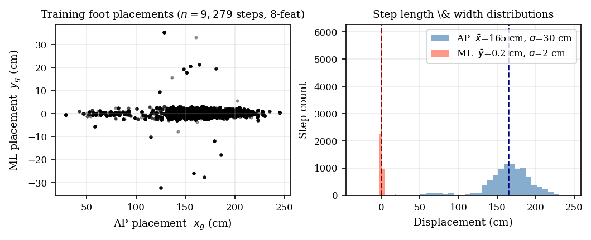
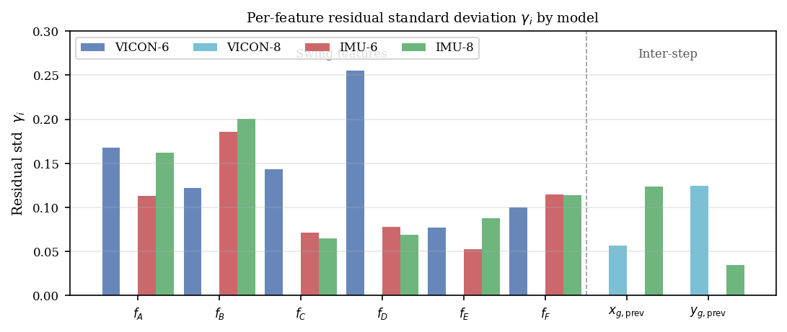
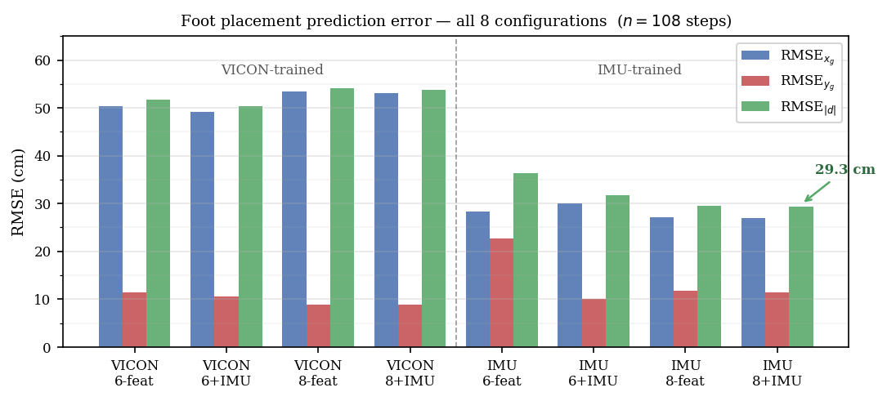

Manuscript — CMU Graduate Research. This page presents the full content of a technical manuscript written independently by Fawaz Mallick as part of ongoing graduate research at Carnegie Mellon University (PI: Dr. Hartmut Geyer). The work was evaluated on live IMU hardware in real over-ground walking conditions. This is ongoing work with further testing underway.
Using Sequential Feature-Based Probabilities — Fawaz Mallick, Carnegie Mellon University
Accurate early prediction of foot placement is critical for proactive control of powered lower-limb prostheses and exoskeletons. This work evaluates a Bayesian foot placement predictor — based on the framework of Chen et al. [9] — in a real-time online setting for the first time, with predictions delivered at 100 Hz with <10 ms latency from a live heel-mounted IMU stream. The evaluation extends to two additional inter-step features (xg,prev, yg,prev) trained subject-specifically from IMU dead-reckoning, requiring no motion-capture laboratory, and a probabilistic landing update that treats the ZUPT-INS dead-reckoned heel position as a 9th Bayesian observation at each heel-strike. Evaluated on 108 over-ground walking steps, the best configuration achieves RMSE|d| = 29.3 cm with predictions issued 376 ms before heel-strike. Subject-specific IMU training reduces placement error by 46% over out-of-domain motion-capture models.
Clinical motivation: Powered prosthetic ankles and exoskeleton joints must configure impedance and trajectory before heel-strike; reactive ground-contact strategies sacrifice push-off energy and impair stability [2]. Foot placement prediction during the swing phase is therefore a central problem in wearable robotics [1]. Lower-limb amputees fall at nearly twice the rate of age-matched controls, often during transitional locomotion tasks — a predictive controller that anticipates landing position could enable pre-emptive impedance adjustments and reduce falls.
A single IMU on the shoe provides the natural sensing modality: lightweight, infrastructure-free, and continuously worn. Zero-velocity updates (ZUPTs) during stance anchor a navigation EKF and bound drift, enabling centimetre-level per-step trajectory estimation [3, 4].
Prior foot placement predictors rely on gaze sensors [5], stereo vision [6], deep learning on multi-sensor sequences [7], or neuro-fuzzy step-length regressors [8]. Chen et al. [9] proposed the most IMU-compatible approach: a Bayesian predictor using six swing-phase features from a heel-mounted IMU that sequentially updates a 2-D foot placement grid. Xiong et al. [10] extended it to complex terrains. Prior work evaluates either online reactive strategies or offline predictive strategies on stored trajectories. This work is the first to evaluate the Bayesian framework in real time on live hardware, closing the gap between offline prediction and practical deployment.
Chen et al. [9] model foot placement as a probability distribution over a discrete grid of cells C = (xi, yi) covering area A. A Gaussian prior centred on the mean of the two previous steps is updated sequentially as each swing-phase feature fj is detected:
The per-cell likelihood uses a learned expected-value surface hj(xi, yi) and per-feature residual std γj:
The predicted placement is the weighted centroid of the final posterior. Each grid evaluation takes ≈150 ms per step in MATLAB as reported by Chen et al. [9] — too slow for real-time prosthesis control. This paper achieves <10 ms per step.
We retain the six swing-phase features of Chen et al. [9] (fA–fF) and add two novel inter-step features: xg,prev and yg,prev, the AP and ML foot placements of the immediately preceding step estimated from IMU dead-reckoning. No laboratory, motion-capture system, or additional sensor is required — these values are computed entirely from the ongoing ZUPT-INS trajectory.
| Feature | Description | Unit | Source |
|---|---|---|---|
| fA | AP velocity extremum | m/s | Chen et al. [9] |
| fB | ML velocity positive peak | m/s | Chen et al. [9] |
| fC | Vertical velocity positive peak | m/s | Chen et al. [9] |
| fD | Peak vertical position | m | Chen et al. [9] |
| fE | AP position at vertical apex | m | Chen et al. [9] |
| fF | ML position at vertical apex | m | Chen et al. [9] |
| xg,prev | Prev. step AP placement (IMU dead-reckoning) | m | Extended |
| yg,prev | Prev. step ML placement (IMU dead-reckoning) | m | Extended |
Table I. Swing-phase features. fA–fF replicate Chen et al. [9]; xg,prev, yg,prev are novel inter-step features requiring no laboratory infrastructure.
Unlike Chen et al., who centre their prior on the mean of the two most recent measured placements, our prior anchors on the single most recent predicted centroid — compatible with real-time deployment where ground-truth positions are unavailable. At the start of each swing phase:
where σp = 0.10 m and β = 0.5. For k ≥ 2 in the IMU variant, x̂(k−1) is replaced by the centroid of the landing-probability update (§III.C), so each step's prior is anchored to the most accurate available position estimate.
At heel-strike, the ZUPT-INS provides a dead-reckoned landing estimate x̂IMU ∈ ℝ². We treat this as a 9th Bayesian observation by evaluating a 2-D Gaussian likelihood over the grid and multiplying into the current posterior:
The placement noise covariance Σpp = σa² T³/3 · I (σa = 0.028 m/s², T = swing duration) grows with swing time. The centroid of Pref seeds the prior for the next step, coupling successive predictions. This creates a closed-loop correction mechanism: even if the swing-phase prediction has lateral drift, the landing update corrects it before the following step begins.


Hardware: A single HWT906 IMU (100 Hz, 16-bit) taped to the heel side of the shoe, matching Chen et al. [9]. Raw accelerometer and gyroscope readings are transformed to the world frame using the IMU's onboard quaternion filter.
Stance detection: World-frame linear acceleration magnitude < 3.0 m/s² and gyroscope magnitude < 100 deg/s for ≥ 20 consecutive samples. A minimum of 30 swing samples is required to suppress false toe-offs.
A 6-state EKF tracking position p and velocity v is maintained throughout the gait cycle [3]. At each toe-off, position and covariance are reset to p = 0 and P = 10−6I, bounding dead-reckoning drift to within one swing phase. Rebula drift correction [4] removes residual linear velocity bias:
The ZUPT-INS dead-reckoned positions serve triple duty: feature extraction during swing, inter-step feature labelling (xg,prev, yg,prev), and the 9th-observation landing update at heel-strike.
Features fA–fC are velocity extrema detected early in swing. Features fD–fF require the vertical apex to have passed (mid-swing). All six original features plus the two inter-step features are available at approximately 50% of the swing phase, providing ≈376 ms of prediction lead time before heel-strike — more than 2× the prosthetic ankle actuation budget (~150 ms).
To replicate and extend the offline evaluation of Chen et al. [9], we use the Camargo et al. dataset [11]: VICON (200 Hz), IMU, and EMG from 22 able-bodied subjects walking at 0.5–1.85 m/s on a treadmill. Subjects AB06–AB12 are used for training (n = 10,323 steps); AB13 is held out for cross-subject evaluation (n = 1,306 steps). This is a purely offline test — features are extracted from stored trajectories and ground-truth labels are VICON marker data.
Regression surfaces and γ values for IMU-trained models are fitted entirely from data collected during unconstrained free-walking across 96 separate sessions (indoor corridors, hallways, varying speed). No treadmill or motion-capture system is used. ZUPT-INS dead-reckoned placements serve as both training inputs (xg, yg) and feature labels.
Quality filters retain steps with swing duration < 1.5 s; 0.10 < xIMU < 2.50 m; |yIMU| < 2.00 m → n6 = 10,916 steps. For the 8-feature model, a 1-σ lateral filter removes turn-contaminated steps → n8 = 9,279 steps. Without this filter, γyg,prev = 0.130 (unreliable); after filtering it drops to 0.035.
Protocol: A single real-time evaluation session of 121 steps of level-ground over-ground walking was recorded. After quality filtering: 111 steps remain; the first 3 (warm-up) are excluded, leaving n = 108 evaluation steps. The Bayesian grid predictor runs live at 100 Hz on the raw IMU stream — no post-processing.
Configurations tested: 8 total, crossing training source (VICON / IMU) × feature set (6-feat / 8-feat) × landing update (±). All eight are evaluated on the same 108 steps.
| Subject | Model | n steps | RMSEx (cm) | RMSEy (cm) | RMSE|d| (cm) |
|---|---|---|---|---|---|
| AB06 | Variant 1 | 1815 | 9.9 | 2.2 | 8.4 |
| AB06 | Variant 3 | 1815 | 5.0 | 2.3 | 4.4 |
| AB07 | Variant 1 | 1698 | 11.5 | 3.6 | 10.2 |
| AB07 | Variant 3 | 1698 | 6.0 | 3.6 | 6.1 |
| AB09 | Variant 1 | 1604 | 10.9 | 3.1 | 9.8 |
| AB09 | Variant 3 | 1604 | 5.2 | 3.8 | 5.5 |
| AB13 † | Variant 1 | 1306 | 9.7 | 3.3 | 8.9 |
| AB13 † | Variant 3 | 1306 | 5.8 | 3.6 | 6.8 |
Table II. VICON model — per-subject leave-one-out on Camargo treadmill data. † AB13 is cross-subject (unseen during training). Variant 3 reduces AP error ≈45% vs. Variant 1, consistent with Chen et al. [9].
| Train | Variant | RMSEx (cm) | RMSEy (cm) | RMSE|d| (cm) | Mean |d| (cm) |
|---|---|---|---|---|---|
| VICON | Variant 1 | 50.4 | 11.4 | 51.7 | 44.8 |
| Variant 2 | 49.2 | 10.5 | 50.3 | 44.1 | |
| Variant 3 | 53.4 | 8.8 | 54.1 | 35.6 | |
| Variant 4 | 53.1 | 8.9 | 53.8 | 37.2 | |
| IMU | Variant 1 | 28.4 | 22.6 | 36.3 | 32.3 |
| Variant 2 | 30.1 | 10.0 | 31.7 | 24.7 | |
| Variant 3 | 27.2 | 11.7 | 29.6 | 23.3 | |
| Variant 4 | 27.0 | 11.4 | 29.3 | 23.3 |
Table III. Real-walking prediction error (n = 108 over-ground steps). Best configuration bold/green. VICON-trained models degrade 7× on free walking; IMU subject-specific training restores accuracy.

| Metric | Value |
|---|---|
| Mean swing duration | 778 ± 91 ms |
| Toe-off → prediction (apex) | 402 ms |
| Prediction lead time before heel-strike | 376 ms |
| Per-step grid update | <10 ms |
| Chen et al. grid-map [9] | ~150 ms |
| Prosthetic ankle actuation budget | ~150 ms |
Table IV. Online timing — 108-step session. Prediction lead time (376 ms) exceeds the prosthetic actuation budget by more than 2×. Per-step inference at <10 ms is a 15× speedup over the MATLAB implementation of Chen et al. [9].
Key findings:
The large VICON-to-free-walking domain gap arises because treadmill walking enforces a constrained, periodic gait pattern at fixed speeds, while free walking involves variable speed, spontaneous direction changes, and different footwear-surface dynamics. Subject-specific IMU training in the deployment environment eliminates this gap without any laboratory infrastructure — the subject simply walks freely in the corridors where the device will be used.
The 1-σ lateral filter is a practical necessity when walking sessions contain turns. Turn steps have |yIMU| far outside the straight-line distribution, poisoning the inter-step regression for yg,prev. Curating a straight-line sub-dataset is sufficient to recover reliable ML inter-step features without additional hardware.
For real amputee users, foot IMU data originates from the prosthetic limb whose motion is actively controlled by the device — using that signal to predict the placement the device must achieve introduces circular reasoning. A contralateral hip or thigh IMU avoids this dependency and may preserve the inter-step correlation structure exploited by xg,prev and yg,prev. This is the primary direction for future clinical translation.
This is ongoing work. Current active areas of investigation include: